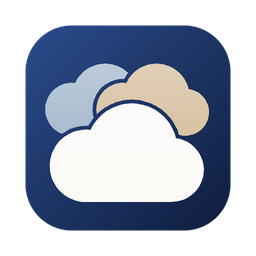

Politique de confidentialité
Privacy policy
Application Sesame · dernière mise à jour : 4 novembre 2026 · Page d'accueil
Sesame app · last updated: November 4, 2026 · Home page
En une phrase
Sesame travaille uniquement sur votre ordinateur : vos fichiers vont directement de votre cloud (Google Drive, OneDrive, Dropbox, NAS) à votre ordinateur, et inversement. Le développeur n'a aucun serveur, ne reçoit rien et ne voit rien de vos données.
Ce à quoi Sesame accède
Quand vous connectez un compte Google, Sesame demande l'accès à Google Drive pour lister, télécharger, envoyer, modifier et supprimer des fichiers dans les dossiers que vous avez choisis de synchroniser. C'est le seul usage : Sesame ne lit pas vos fichiers pour autre chose et ne les analyse pas.
Où vont vos données
- Vos fichiers circulent uniquement entre le service cloud et votre ordinateur. Ils ne passent par aucun serveur du développeur ni d'un tiers.
- Vos autorisations de connexion (jetons) sont enregistrées sur votre ordinateur, dans un fichier protégé réservé à votre session. Les mots de passe de NAS utilisent le stockage sécurisé du système lorsqu’il est disponible (Trousseau sur Mac). Sinon, un fichier local protégé est utilisé ; ce fichier n’est pas chiffré par Sesame. Rien de tout cela n'est envoyé ailleurs.
- Le chiffrement : les « coffres » de Sesame chiffrent vos dossiers sur votre ordinateur avant l'envoi. Personne, pas même le cloud, ne peut les lire sans votre mot de passe.
- Nous écrire : le message part depuis votre logiciel de messagerie, et seulement si vous cliquez sur Envoyer. Les informations techniques ne sont jointes que si vous le choisissez.
Statistiques d'utilisation sur Mac (vous pouvez les couper)
Sur Mac, elles sont activées au départ. Vous pouvez les couper à tout moment dans les Réglages (rubrique Confidentialité) : plus rien n'est alors envoyé. Sesame envoie seulement des événements anonymes et fixes (par exemple « un compte a été ajouté », avec le type de service) au service de mesure respectueux de la vie privée TelemetryDeck. Jamais de nom de fichier, de dossier ou de compte, jamais d'adresse e-mail ni de chemin.
Données issues de Google
L'utilisation par Sesame des informations reçues des API Google respecte la Politique relative aux données utilisateur des services d'API Google, y compris les exigences d'utilisation limitée. Sesame ne vend pas ces données, ne les partage avec personne, ne s'en sert pas pour de la publicité, et aucun humain ne les consulte.
Supprimer vos données, retirer l'accès
- Dans Sesame, « Retirer le compte » supprime l'autorisation enregistrée sur votre ordinateur. Vos fichiers déjà copiés restent où ils sont ; vous les supprimez comme n'importe quel dossier.
- Vous pouvez aussi révoquer l'accès à tout moment depuis votre compte Google : myaccount.google.com/permissions.
Contact
Une question sur cette politique : Xavier Roubaud, xavier.roubaud@gmail.com.
In one sentence
Sesame works only on your computer: your files go straight from your cloud (Google Drive, OneDrive, Dropbox, NAS) to your computer and back. The developer runs no server, receives nothing and sees none of your data.
What Sesame accesses
When you connect a Google account, Sesame asks for access to Google Drive to list, download, upload, modify and delete files in the folders you chose to synchronize. That is its only use: Sesame does not read your files for any other purpose and does not analyze them.
Where your data goes
- Your files travel only between the cloud service and your computer. They never pass through any server of the developer or of a third party.
- Your sign-in authorizations (tokens) are stored on your computer, in a protected file reserved to your session. NAS passwords use the system’s secure storage when available (Keychain on Mac). Otherwise, a protected local file is used; Sesame does not encrypt that file. None of this is sent anywhere else.
- Encryption: Sesame's “vaults” encrypt your folders on your computer before upload. Nobody, not even the cloud, can read them without your password.
- Contact us: the message is sent from your own mail app, and only if you click Send. Technical information is attached only if you choose so.
Usage statistics on Mac (you can turn them off)
On Mac, they are on at first. You can turn them off at any time in Settings (Privacy section): nothing is sent after that. Sesame sends only anonymous, fixed events (for example “an account was added”, with the type of service) to the privacy-friendly analytics service TelemetryDeck. Never a file, folder or account name, never an e-mail address or a path.
Data received from Google
Sesame's use and transfer of information received from Google APIs adheres to the Google API Services User Data Policy, including the Limited Use requirements. Sesame does not sell this data, share it with anyone, use it for advertising, and no human reads it.
Deleting your data, removing access
- In Sesame, “Remove account” deletes the authorization stored on your computer. Files already copied stay where they are; you delete them like any folder.
- You can also revoke access at any time from your Google account: myaccount.google.com/permissions.
Contact
Questions about this policy: Xavier Roubaud, xavier.roubaud@gmail.com.